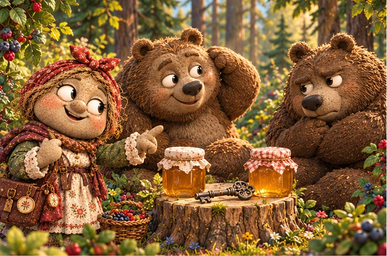
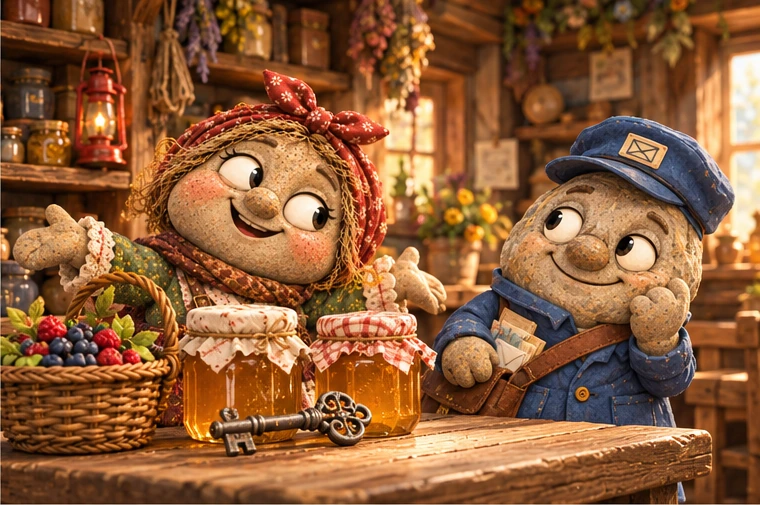
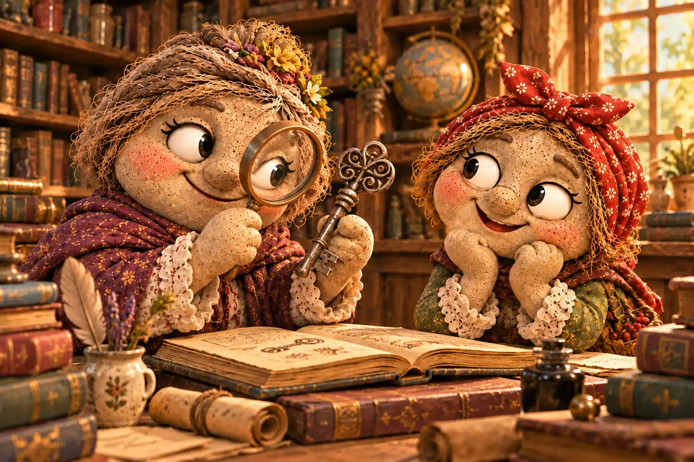
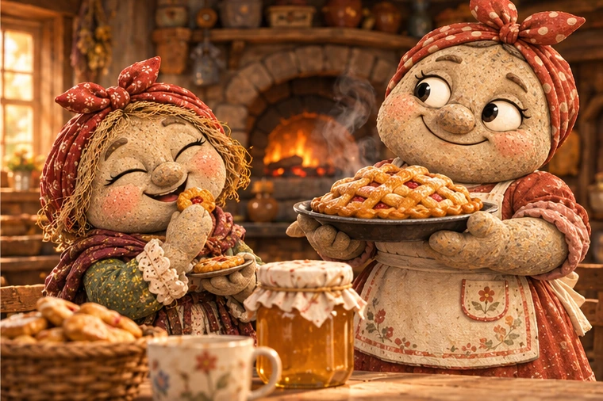

В Галькино было одно место, куда жители заходили за солью, нитками, свечами, вареньем и советом, как сберечь пару монет. Это была лавка Дарьи Копейкиной. На полках теснились баночки и корзины, под прилавком лежали запасные мешочки, а на дверях висел колокольчик, который Дарья однажды приобрела сразу в трёх экземплярах.
— Зачем тебе три колокольчика? — спросила учительница Анфиса Миронова.
— По одному они стоили дороже, — объяснила Дарья.
— Но тебе нужен был только один.
— Зато теперь два у меня в запасе. И оба — со скидкой!
Анфиса открыла рот, чтобы возразить, но решила поберечь силы для школьных уроков.
Дарья действительно умела торговаться. Она помнила цену каждой вещи в лавке и могла по одному звону определить, сколько монет упало на прилавок. Однако особенную радость ей приносила не сама покупка, а ощущение, что она заключила сделку лучше всех. Порой Дарья возвращалась с вещью, которой вовсе не собиралась обзаводиться, и до вечера рассказывала, насколько дёшево та ей досталась.
Самой заветной её мечтой была скидка в сто десять процентов.
— Это значит, что продавец должен отдать тебе товар и ещё доплатить, — заметил однажды картограф Фома Знаменский, подсчитав что-то на краю газеты.
— Именно! — просияла Дарья. — Представляешь, какая будет экономия?
— Но зачем продавцу соглашаться?
— Вот это, Фома, уже искусство переговоров.
✦ ✦ ✦
Однажды летним утром Дарья отправилась в лес за ягодами. В лавке заканчивалась черника, а Марфа Крошкина обещала к празднику испечь пироги, если найдутся свежие ягоды для начинки. Дарья взяла большую плетёную корзину, закрыла лавку и пошла по тропинке вдоль ручья.
Лес был ещё прохладным после ночи. Между корнями сосен краснела земляника, под кустами темнели спелые ягоды, а над полянами лениво кружили пчёлы. Дарья успела наполнить дно корзины, когда за зарослями орешника услышала два сердитых голоса.
— Я вчера нёс его всю дорогу! — проворчал один.
— А я позавчера! Теперь твоя очередь, — ответил другой.
Дарья раздвинула ветви и увидела двух медведей. Они сидели у поваленного дерева. Рядом стояли две закрытые банки мёда, а на пне лежал старинный железный ключ с необычной бородкой и потемневшим круглым ушком.
— Мы нашли его возле старой лесной дороги, — объяснил первый медведь, заметив гостью. — Думали, пригодится. Только ни к одной нашей двери не подходит.
— Да у нас и дверей-то нет, — добавил второй. — А выбросить жалко. Вдруг нужная вещь?
Оказалось, медведи уже несколько дней пытались вручить находку друг другу. Каждый хотел оставить ключ на хранение у соседа, а заодно уговорить того принять банку мёда в подарок. Медведи были так упрямы, что оба непременно предлагали что-нибудь сверху, лишь бы самим больше не носить тяжёлую железку.
Дарья посмотрела на ключ. Потом на банки. Потом снова на ключ.
— Значит, вы хотите от него избавиться? — уточнила она.
— Очень, — вздохнули оба.
— А две банки мёда вы готовы отдать тому, кто его заберёт?
Медведи переглянулись.
— Если унесёт ключ и больше не принесёт обратно, — осторожно сказал первый.
— И не заставит нас искать, к чему он подходит, — добавил второй.
Дарья задумалась. Мёд она совершенно не любила: он был слишком сладким и липким. Но две полные банки, полученные вместе с вещью совершенно бесплатно, казались ей предложением, мимо которого невозможно пройти.
— Согласна, — объявила она. — Только сразу уточним: я забираю ключ, обе банки мёда и никому из вас ничего не должна?
— Ничего! — обрадовался первый медведь.
— Даже спасибо можно не говорить! — подхватил второй.
Дарья, конечно, поблагодарила обоих. Затем завернула ключ в платок, поставила банки в корзину и осторожно переложила несколько горстей ягод сверху. Корзина оказалась тяжёлой. Но отступать от выгодной сделки из-за такой мелочи Дарья не собиралась.

✦ ✦ ✦
К полудню Дарья вернулась в Галькино. На площади она встретила почтальона Тимофея Булыжникова, который как раз собирался зайти в лавку.
— Как ягодный поход? — спросил он, увидев полную корзину.
— Очень удачный!
Тимофей заглянул внутрь и удивился:
— А почему вместо ягод у тебя мёд?
— Ягоды тоже есть. Просто теперь они сверху.
Дарья с торжественным видом достала старый ключ и рассказала о встрече в лесу. На последних словах Тимофей даже остановился.
— Получается, ты взяла две банки мёда, который не ешь, в обмен на обещание хранить неизвестный ключ?
— Представь себе: ни одной монетки не потратила!
— Но ведь придётся куда-то девать и мёд, и ключ.
— Вот этим я и займусь после обеда, — невозмутимо ответила Дарья.
В лавке она поставила банки на прилавок, разложила ягоды по корзинкам и повесила у двери небольшую табличку: «МЁД. ОСОБО ВЫГОДНОЕ ПРЕДЛОЖЕНИЕ». Указывать цену Дарья пока не стала: сначала нужно было узнать, почём продают мёд в соседних деревнях.
К вечеру о сделке услышала Анфиса. Она пришла за чернилами, но вместо покупки внимательно выслушала рассказ хозяйки.
— Дарья, — сказала учительница, — выгода считается не только по тому, сколько ты заплатила, но и по тому, что тебе действительно нужно.
— Конечно, — согласилась Дарья. — Мне, например, всегда нужны хорошие возможности.
— Возможности что сделать?
— Выгодно ими распорядиться.
Анфиса вздохнула. В этот раз спорить она тоже не стала.

✦ ✦ ✦
Несколько дней ключ пролежал в ящике за прилавком. Дарья иногда доставала его, поворачивала на свету и пыталась угадать, какой замок ему под силу. Ключ был длиннее обычных, а на его ушке едва виднелся странный узор: несколько изгибающихся линий, похожих то ли на волны, то ли на извилистую тропинку.
Однажды в лавку зашла Таисия Архипова, деревенский библиотекарь. Она искала крепкую верёвку для старой коробки с книгами. Пока Дарья подбирала подходящий моток, Таисия заметила железную находку на прилавке.
— Интересный ключ, — сказала она. — Можно посмотреть?
Дарья подала его. Таисия осторожно провела пальцем по узору и нахмурилась, будто пыталась вспомнить давно прочитанную строчку.
— Где ты его нашла?
— Вообще-то не нашла. Выторговала у двух медведей. Причём они сами приплатили мне мёдом!
— Ты знаешь, от чего он?
— Нет. А тебе он для чего?
— Пока не знаю, — честно ответила Таисия. — Но у меня в библиотеке есть книги о старых дорогах и исчезнувших строениях. Возможно, там найдётся что-нибудь похожее.
Дарья взглянула на ключ, затем на заинтересованное лицо Таисии. И тут её осенила мысль.
— А что, если мы заключим ещё одну сделку? Ты забираешь ключ и пробуешь выяснить, от чего он. Если узнаешь — расскажешь мне первой.
— С удовольствием. А ты что получишь?
— Свободный ящик под прилавком и очень любопытную историю. Без единой потраченной монеты.
Таисия улыбнулась и бережно завернула ключ в чистый кусочек ткани. Дарья проводила её до двери. Когда библиотекарь ушла, хозяйка лавки вдруг почувствовала, что на этот раз выгодная сделка оказалась приятной не только ей.

✦ ✦ ✦
А мёд тем временем всё ещё стоял на прилавке. Покупатели охотно рассматривали баночки, но никто не торопился приобретать сразу две. Дарья перебирала варианты: объявить скидку, выставить банки по отдельности или оставить до ярмарки.
Под вечер заглянула Марфа Крошкина. Она несла список продуктов для завтрашней выпечки и выглядела обеспокоенной.
— Мне нужен мёд для пряников, — сказала она. — Но я никак не решу, сколько взять: рецепт ещё не довела до совершенства.
Дарья сразу оживилась.
— У меня как раз две банки. Возьми одну, попробуй свой рецепт. А вторую заберёшь, если понадобится.
— И сколько это будет стоить?
Дарья назвала обычную цену, затем подумала и немного уступила: Марфа регулярно покупала у неё муку и пряности.
— Идёт! — согласилась пекарь.
Когда Марфа ушла, Дарья пересчитала монеты и вдруг улыбнулась. Ей не пришлось уговаривать соседку брать лишнее. Марфа получила нужный продукт, а лавка — довольного покупателя. Вдобавок оставалась ещё одна банка, и её судьба пока никого не тревожила.
Наутро по деревне поплыл запах свежих пряников. Марфа принесла несколько штук в лавку в благодарность за совет. Дарья попробовала один, удивилась и попросила второй.
— Ты же не любишь мёд! — заметила Марфа.
— Мёд — нет, — ответила Дарья. — А вот пряники у тебя очень выгодно получились.
— Выгодно?
— Вкусно, — поправилась Дарья. — Хотя это, пожалуй, тоже выгода.

Позднее Дарья приписала в своём журнале рядом с записью о двух банках: «Получено бесплатно. Одна продана. Один ключ передан на исследование. Итог — удачный».
И всё же о самом ключе она не забыла. Время от времени Дарья заглядывала к Таисии и спрашивала, не удалось ли что-нибудь выяснить. Библиотекарь отвечала, что разгадка пока не найдена, и возвращалась к своим книгам.
Дарья не торопила её. Некоторые вещи, решила она, становятся интереснее, если не выяснять их цену с первого взгляда.
В Почтовом архиве Галькино сохранилась запись:
«Дарья Копейкина отправилась в лес за ягодами, вернулась с двумя банками мёда и старинным ключом. Мёд нашёл применение, ключ передан Таисии Архиповой. Медведи до сих пор уверены, что избавились от совершенно бесполезной вещи. Вопрос о том, кому больше повезло, остаётся открытым».